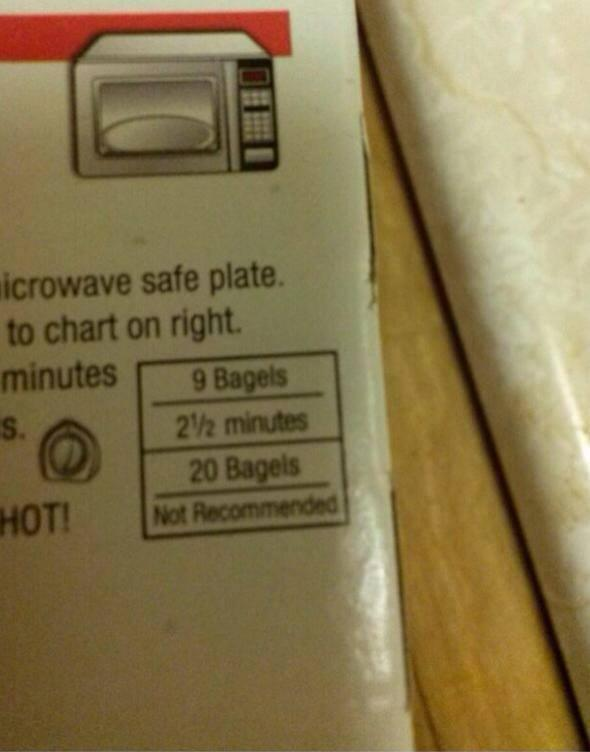

This is the home page I created for COSC 335. As of today, it has been replaced with a much more efficient version.
The links provided should be self-explanatory, but let it not be said they were without irrelevant image macros. What I have, I have to share. 